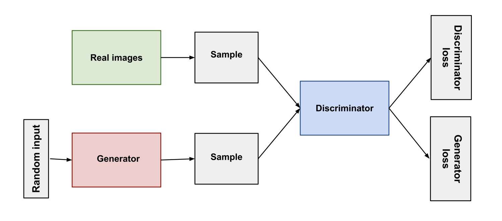
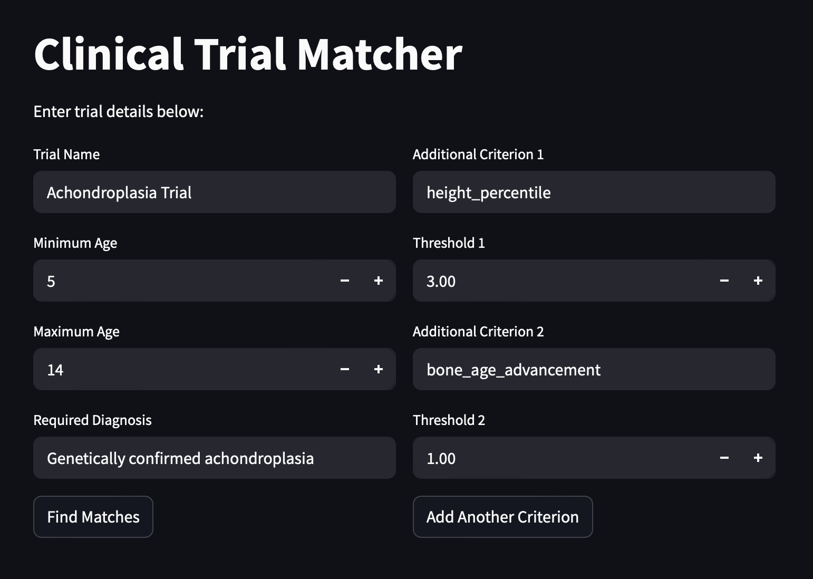
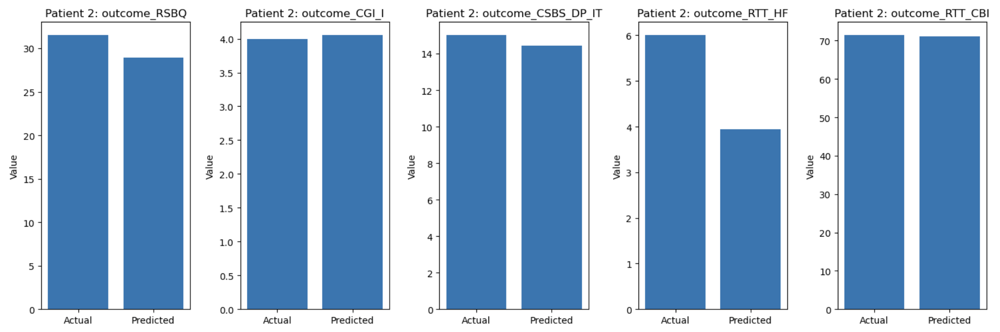

2 min read.
Many rare diseases struggle to recruit enough participants for clinical trials, and even when they do, patients often drop out because of the risk of being assigned the placebo. To address this, I built a tool using Generative Adversarial Networks (GANs) and Machine Learning that tackles three major problems:

One of the biggest reasons patients opt out of trials is the possibility of being given a placebo instead of the actual treatment. To get around this, I created a synthetic control group using GANs — essentially, the model learns to predict what would've happened to a patient if they had received the placebo. This way, every actual participant can receive the drug, while we still preserve the statistical integrity of the trial. A win-win.
Rare diseases, by definition, often don't have enough active cases to even begin a trial. This model helps simulate patient responses to drugs, allowing researchers to virtually test outcomes before even reaching enrollment minimums. So even diseases with tiny patient populations can finally move toward treatment.
As part of the project, I also built a clinical trial matching algorithm where doctors can input inclusion criteria and receive a match score for eligible patients. This simplifies and speeds up the recruitment process and ensures no patient is overlooked.

My best-performing model was XGBoost, with an R² score of 0.96, meaning it predicted patient responses with
near-perfect accuracy — closely mimicking real-world outcomes. With more research and fine-tuning, I truly believe
this approach can revolutionize the way we conduct clinical trials for rare diseases.

A huge thank you to the National Organization for Rare Disorders (NORD) for sponsoring my trip to Boston, and to Harvard for hosting such an inspiring event.